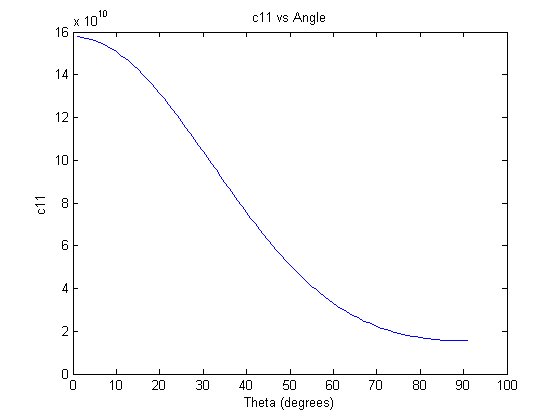
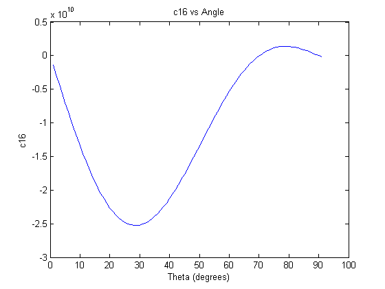
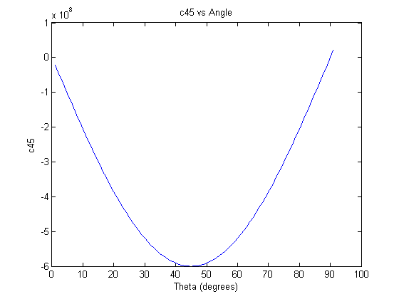

Contents
Introduction
David Vadnais extended Homework 1 Problem 1
clear; clc;
Part A
Calculate the principal strains and the corresponding principal strain directions. Note that this does not depend on the elastic constants as you are given the strain tensor.
% GIVENS % Strain CWID = ****2326 eps = [823,1023,-1023;1023,526,-923;-1023,-923,-526]*10^-6;%strains % Identity matrix I2D = [1,0;0,1]; I3D = [1,0,0;0,1,0;0,0,1]; % LETS DO WORK!!!!!!! % Strain Invariants J1 = sum(diag(eps));%Sum of the diagonals J2 = eps(1,1)*eps(2,2)+eps(1,1)*eps(3,3)+eps(2,2)*eps(3,3)-... 1/4*((2*eps(1,2))^2+(2*eps(1,3))^2+(2*eps(2,3))^2); J3 = det(eps); % WERE HERE PRINICPLE STRAINS! epsP = roots([1,-J1,J2,-J3]) % Still need principle strain directions % Cofactors Direction 1 a1 = det(eps(2:3,2:3)-(I2D * epsP(1)));%strains temp = [eps(2,1),eps(2,3);eps(3,1),eps(3,3)-epsP(1)]; b1 = det(temp);%strains temp = [eps(2,1),eps(2,2)-epsP(1);eps(3,1),eps(3,2)]; c1 = det(temp);%strains E = [epsP(1),0,0;0,epsP(2),0;0,0,epsP(3)] eMod = eps-E; a1mod = ((eMod(2,2)-epsP(1))*(eMod(3,3)-epsP(1)))-eMod(2,3)^2; k1= 1/sqrt(a1^2+b1^2+c1^2); % direction 1 % L1 M1 n1 direction1 = [a1*k1,b1*k1, k1*c1]'; %check ^2 sum = 1 check = sum(direction1.^2); if check ~= true error('check failed') end % Cofactors Direction 3 a2 = det(eps(2:3,2:3)-(I2D * epsP(3)));%strains temp = [eps(2,1),eps(2,3);eps(3,1),eps(3,3)-epsP(3)]; b2 = det(temp);%strains temp = [eps(2,1),eps(2,2)-epsP(3);eps(3,1),eps(3,2)]; c2 = det(temp); k2= 1/sqrt(a2^2+b2^2+c2^2); % direction 1 % L1 M1 n1 direction3 = [a2*k2,b2*k2, k2*c2]'; %check ^2 sum = 1 % check = sum(direction3.^2); % if check ~= true % error('check failed') % end [Vec, Val] = eig(eps); Val = diag(Val); %eigen Directions directionPxx=Vec(:,1) directionPyy=Vec(:,2) directionPzz=Vec(:,3) sigmaP3 = Val(1) sigmaP2 = Val(2) sigmaP1 = Val(3)
epsP =
0.0024
-0.0012
-0.0004
E =
0.0024 0 0
0 -0.0012 0
0 0 -0.0004
directionPxx =
0.3046
0.3050
0.9023
directionPyy =
0.6673
-0.7443
0.0263
directionPzz =
-0.6797
-0.5941
0.4302
sigmaP3 =
-0.0012
sigmaP2 =
-3.5847e-04
sigmaP1 =
0.0024
Part B
Construct the material stiffness matrix in the principal material coordinates. Next, using Auld’s K?matrix (described in the document on Blackboard) develop plots of C11, C16 and C45 as functions of the fiber angle, ?. Here, you are rotating the material coordinates about the z-axis, so you know the form of the T matrix.
% Youngs mod E = [155,12.1,12.1]*10^9;%Pa % poissions v12 = 0.248; v13=v12; v23=0.458; % shear modulus G23 = 3.2E9; G13 = 4.4E9; G12=G13; % Lame modulus v21 = v12/E(1)*E(2); v31 = v13/E(1)*E(3); v32 = v23/E(2)*E(3); lam12 = v12*E(1)/((1+v12)*(1-2*v12)); lam21 = v21*E(2)/((1+v21)*(1-2*v21)); lam13 = v13*E(1)/((1+v13)*(1-2*v13)); lam23 = v23*E(2)/((1+v23)*(1-2*v23)); lam31 = v31*E(3)/((1+v31)*(1-2*v31)); lam32 = v32*E(3)/((1+v32)*(1-2*v32)); sInitial= [1/E(1),-v12/E(2),-v13/E(3),0,0,0;... -v21/E(1), 1/E(2),-v23/E(3),0,0,0;... -v31/E(1),-v32/E(2), 1/E(3),0,0,0;... 0,0,0,1/G23,0,0;... 0,0,0,0,1/G13,0;... 0,0,0,0,0,1/G12]; cInitial = inv(sInitial) theta = 0; while theta < 91 T = [cosd(theta)^2,sind(theta)^2,0,0,0,sind(2*theta);... sind(theta)^2,cosd(theta)^2 ,0,0,0,-sind(2*theta);... 0,0,1,0,0,0;... 0,0,0,cosd(theta),-sind(theta),0;... 0,0,0,sind(theta),cosd(theta),0;... -sind(2*theta)/2,sind(2*theta)/2,0,0,0,cosd(2*theta)]; %Create K sub matrix k1 = [T(1,1),T(1,2),T(1,3);... T(2,1),T(2,2),T(2,3);... T(3,1),T(3,2),T(3,3)].^2; k2 = [T(1,2)*T(1,2),T(1,3)*T(1,1),T(1,1)*T(1,2);... T(2,2)*T(2,3),T(2,3)*T(2,1),T(2,1)*T(2,2);... T(3,2)*T(3,3),T(3,3)*T(3,1),T(3,1)*T(3,2)]; k3 = [T(2,1)*T(3,1),T(2,2)*T(3,2),T(2,3)*T(3,3);... T(3,1)*T(1,1),T(3,2)*T(1,2),T(3,3)*T(1,3);... T(1,1)*T(2,1),T(1,2)*T(2,2),T(1,3)*T(2,3)]; k4 = [T(2,2)*T(3,3)+T(2,3)*T(3,2),T(2,3)*T(3,1)+T(2,1)*T(3,3),T(2,1)*T(3,2)+T(2,2)*T(3,1);... T(3,2)*T(1,3)+T(3,3)*T(1,2),T(3,3)*T(1,1)+T(3,1)*T(1,3),T(3,1)*T(1,2)+T(3,2)*T(1,1);... T(1,2)*T(2,3)+T(1,3)*T(2,2),T(1,3)*T(2,1)+T(1,1)*T(2,3),T(1,1)*T(2,2)+T(1,2)*T(2,1)]; k = [k1,2*k2;k3,k4]; Cprime = k*cInitial*transpose(k); c11(theta+1)=Cprime(1,1); c16(theta+1)=Cprime(1,6); c45(theta+1)=Cprime(4,5); theta = theta +1; end theta = 1:1:91; for i=1:91 A1=cosd(theta(i)); B1=sind(theta(i)); k_1 = [A1^2,B1^2,0;B1^2,A1^2,0;0,0,1]; k_2 = [0,0,A1*B1;0,0,-A1*B1;0,0,0]; k_3 = [0,0,0;0,0,0;-A1*B1,A1*B1,0]; k_4 = [A1,-B1,0;B1,A1,0;0,0,A1^2-B1^2]; K_check = [k_1,k_2;k_3,k_4]; cPrimecheck = K_check*cInitial*transpose(K_check); C_11(i) = cPrimecheck(1,1); C_16(i) = cPrimecheck(1,6); C_45(i) = cPrimecheck(4,5); end % plots plot(theta,C_11) title('c11 vs Angle') xlabel('Theta (degrees)') ylabel('c11') figure(2) plot(theta,C_16) title('c16 vs Angle') xlabel('Theta (degrees)') ylabel('c16') figure(3) plot(theta,C_45) title('c45 vs Angle') xlabel('Theta (degrees)') ylabel('c45')
cInitial =
1.0e+11 *
1.5780 0.7220 0.7220 0 0 0
0.0044 0.1551 0.0721 0 0 0
0.0044 0.0721 0.1551 0 0 0
0 0 0 0.0320 0 0
0 0 0 0 0.0440 0
0 0 0 0 0 0.0440
   Part C
For the specific case of ?=32 degrees, calculate the normal to the plane that the maximum principal stress, ?1, acts on. Compare this direction with the direction of the maximum principal strain, ?1, from part (a). Are they the same or are they different? Why or why not?
epsVec = [eps(1,1),eps(2,2),eps(3,3),2*eps(2,3),2*eps(1,3),2*eps(1,2)]; %Stress Sigma = (cInitial*transpose(epsVec))/10^6;%MPa TensSigma = [Sigma(1),Sigma(6),Sigma(5);... Sigma(6),Sigma(2),Sigma(4);... Sigma(5),Sigma(4),Sigma(3)]; [epVec,epsVal] = eig(TensSigma); epsVal = diag(epsVal) epVec disp('The principle strain directions and principle stress directions are') disp('different this means that the principle strain is not at the same') disp('place or direction as the princpal stress')
epsVal =
-7.1078
6.5328
131.1650
epVec =
0.0313 -0.0966 -0.9948
0.4272 0.9011 -0.0741
0.9036 -0.4227 0.0695
The principle strain directions and principle stress directions are
different this means that the principle strain is not at the same
place or direction as the princpal stress